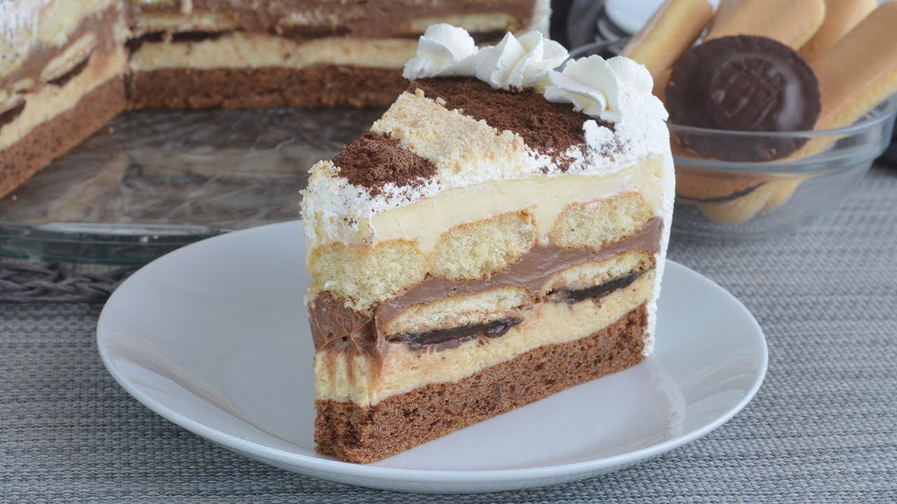

Kora:
Fil 1:
Fil 2:
Ostalo:
Sve sastojke za koru umititi mikserom osim praška za pecivo koji se dodaje pred kraj mućenja i umeša se kašikom.
Tu smesu izliti u kalup i peći. Ostaviti da se ohladi.
Fil I: mlevenu plazmu natopiti u sok od narandže i tome dodati jedan margarin i šećer u prahu. Sve to smešati da dobijemo jednoličnu smesu.
Fil II: Skuvati u mleku 4 pudinga od vanile koje smo prethodno razmutili sa malo vode i šećerom.
Kada se puding skuva ostaviti da se ohladi, a kada se ohladi onda tu dodati 2 margarina i smesu podeliti na 2 dela. Prvi deo ostaje žut, a drugom dodamo 200 g otopljene čokolade.
Ređati: Kora - Fil I - jafa keks jedan do drugog - žuti fil od pudinga - piškote namočite u mleko - čokoladni fil od pudinga- šlag.